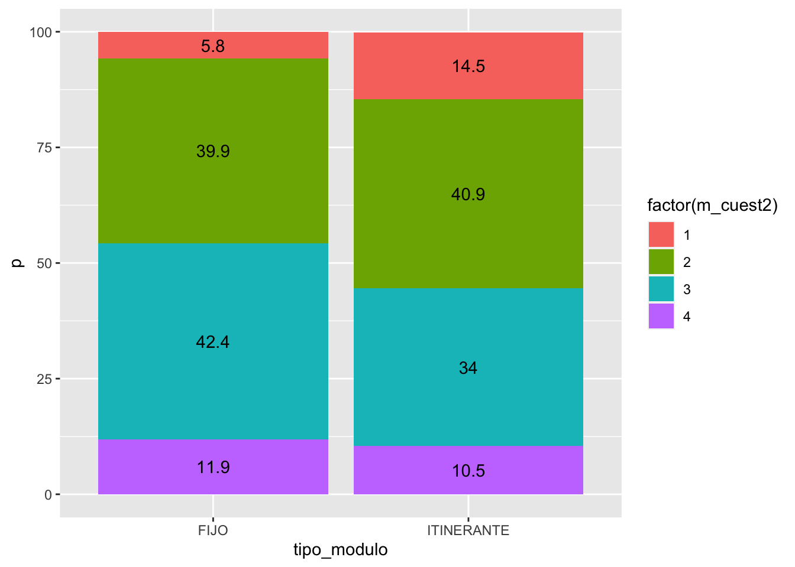
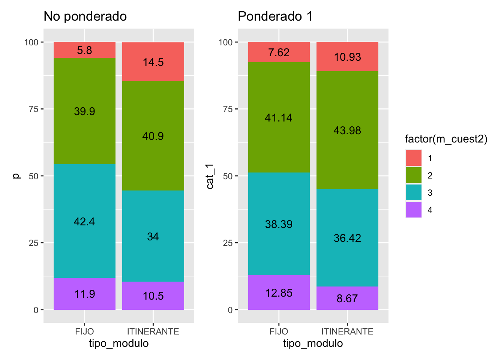
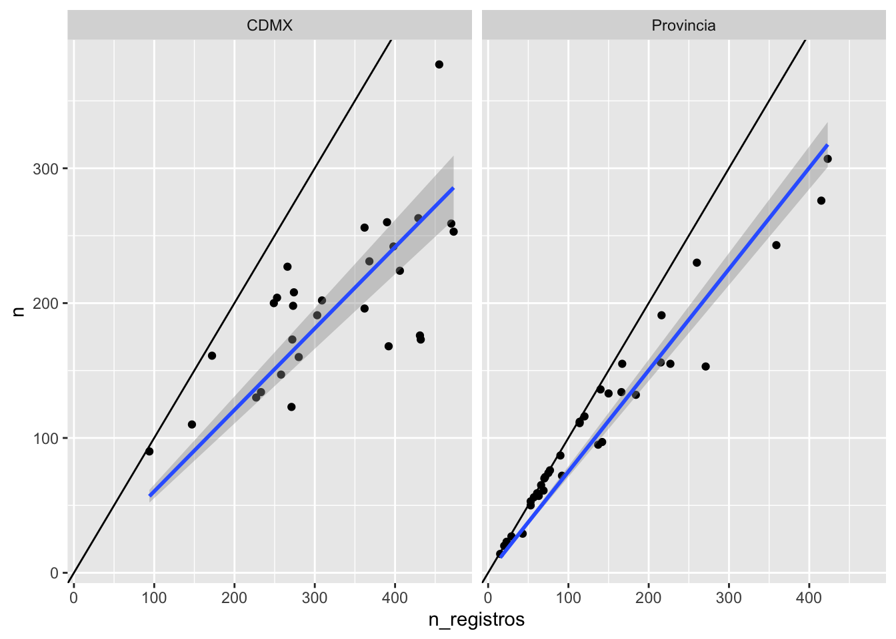
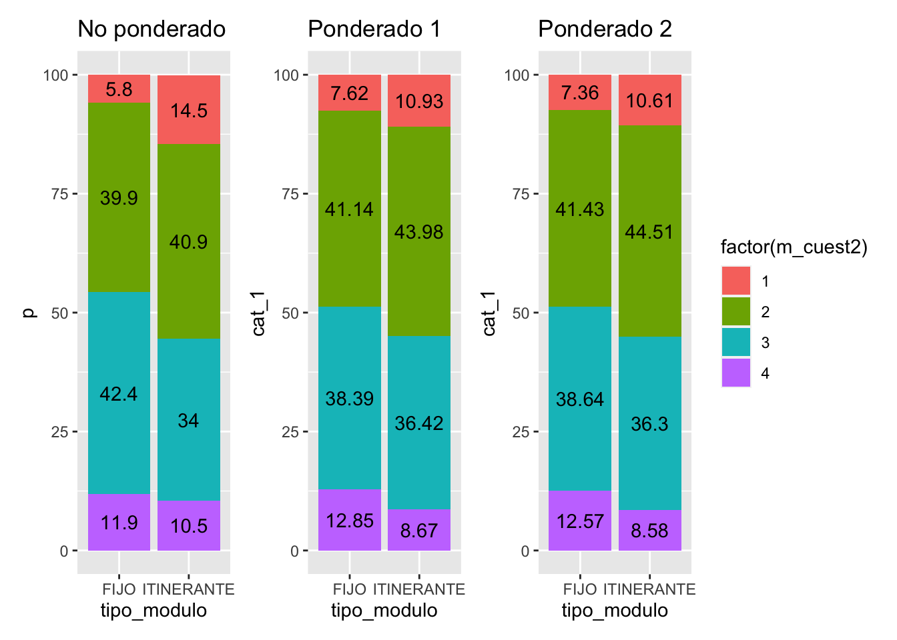
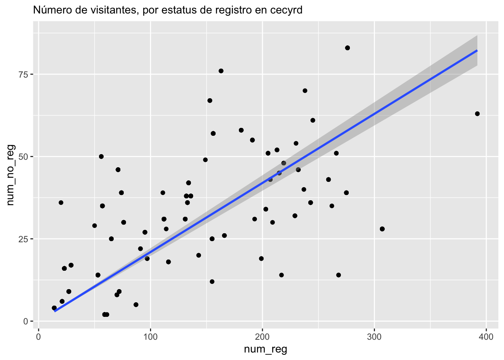

library(tidyverse)
library(lubridate)
library(survey)
library(srvyr)
library(patchwork)
# datos encuestas
encuesta_tbl <- read_csv("datos/modulos/1_Ponderadores/Resultados8_encuesta_registros_ponderadores.csv") |>
mutate(registrado_sistema = !is.na(Ponderador_sol_cred)) ## variable correcta?
# turnos censados
turnos_tbl <- read_csv("datos/modulos/1_Ponderadores/Datos_Modulos19_Muestra.csv")Encuesta de módulos: exploración
Lectura de datos: encuestas
Leer datos cecyrd:
# quitar modulos 60, 61 y 91
datos_cecyrd <- read_delim(
"datos/modulos/1_Ponderadores/Datos_SOLICITUDES_ENTREGAS_CPV_281019_AL_101119.txt",
delim = "|",
escape_double = FALSE,
col_types = cols(FECHA_CREACION_MAC = col_datetime(format = "%d/%m/%Y %H:%M:%S"),
FECHA_ENTREGA_CREDENCIAL = col_datetime(format = "%d/%m/%Y %H:%M:%S"),
FUAR = col_character(), MODULO_IFE_ID = col_character()),
trim_ws = TRUE) |>
mutate(Edo = str_sub(MODULO_IFE_ID, 1, 2)) |>
mutate(Dtto = str_sub(MODULO_IFE_ID, 3, 4)) |>
mutate(id_adicional = str_sub(MODULO_IFE_ID, 5, 6)) |>
filter(id_adicional %in% c("51", "52", "53", "54", "55", "56", "57"))Construir marco de cecyrd
modulos_marco_cec <- datos_cecyrd |>
group_by(MODULO_IFE_ID, Edo, Dtto) |>
summarise(n_registro = n(), .groups = "drop")
modulos_distrito <- modulos_marco_cec |>
group_by(Edo, Dtto) |>
summarise(n_modulos = n(), .groups = "drop")Replicar resultados no ponderados
Motivo de visita, sin ponderar (replicar Gráfica 4 y Gráfica 5)
# Grafica 4
tabla_4 <- encuesta_tbl |>
count(m_cuest2) |>
mutate(p = round(100 * n / sum(n), 2))
tabla_4# A tibble: 4 × 3
m_cuest2 n p
<dbl> <int> <dbl>
1 1 806 6.55
2 2 4915 40.0
3 3 5123 41.7
4 4 1452 11.8 #Gráfica 5
tabla_5 <- encuesta_tbl |> group_by(tipo_modulo) |>
count(m_cuest2) |>
mutate(p = round(100 * n / sum(n), 1))
tabla_5# A tibble: 8 × 4
# Groups: tipo_modulo [2]
tipo_modulo m_cuest2 n p
<chr> <dbl> <int> <dbl>
1 FIJO 1 646 5.8
2 FIJO 2 4464 39.9
3 FIJO 3 4748 42.4
4 FIJO 4 1336 11.9
5 ITINERANTE 1 160 14.5
6 ITINERANTE 2 451 40.9
7 ITINERANTE 3 375 34
8 ITINERANTE 4 116 10.5g5_no_pond <- ggplot(tabla_5, aes(x = tipo_modulo, y = p,
fill = factor(m_cuest2), label = p)) +
geom_col() + geom_text(position = position_stack(vjust = 0.5))
g5_no_pond
Resultados con diseño (primera aproximación)
Utilizando el diseño planteado en la sección de metodología, consideramos la expansión que tal diseño sugiere, donde los factores de expansión a nivel unidad primaria son dados por el número de distritos, el número de módulos dentro de cada distrito, y le número de días para el que se pretende hacerla expansión.
Las unidades secundarias son días-módulo, y buscamos hacer expansión a Lunes-Viernes del 28 de octubre al 8 de noviembre (10 días).
Sin embargo, hacemos las siguientes observaciones, en cuanto a la no realización del censo dentro de cada módulo seleccionado. Ambas observaciones apuntan hacia simplificar el trabajo administrativo y acercar más el diseño a uno probabilístico:
- No respuesta por carga de trabajo. Puede considerarse algún tipo de muestreo sistemático dentro de los módulos, pues según los registros, no se alcanza a capturar todos los visitantes, incluso sólo considerando aquellos que corresponden a solicitudes y entregas de credenciales. Muestrear a este nivel de una manera simple, cercana a aleatoria, puede aliviar simplificar la operación, y obtener resultados más cercanos a selección probabilística.
Acerca de los días de visita y turnos:
- Selección no aleatoria de días y falta de información de segundos turnos. Los días de visita para cada módulo podrían seleccionarse aleatoriamente. Si existe más de un turno puede recopilarse información de ambos turnos o seleccionar uno al azar.
Finalmente, acerca de los módulos itinerantes:
- Mecanismo de selección de itinerantes. Es posible hacer estimaciones separadas por módulos fijos e intinerantes bajo el diseño actual. Sin embargo, calcular varianzas para los agregados no es directo a menos que se conozca el procedimiento exacto para su selección, y cómo depende del módulo fijo seleccionado.
- Si es apropiado, esto se puede mejorar agrupando en un principio módulos que son seleccionados juntos, y considerándolos como una unidad completa.
- En otro caso, tenemos que conocer la probabilidad condicional de seleccionar cada módulo itinerante dado que seleccionó cada uno de los módulos fijos.
Para el siguiente ejercicio, utilizaremos:
Estratificación: es necesario usar la estratificación CMDX-NoCDMX.
Consideramos las UPMs como distritos,
El ponderador es el número de días de trabajo para los módulos de la CDMX y es \((276/26)*(N_i/n_i)*d_i\) donde \(N_i\) es el número de módulos en cada distrito, \(n_i\) el número de módulos seleccionados en muestra para el distrito, y \(d_i\) es el número de días que el módulo estuvo operando.
Sólo se visita un turno (el primero). Estrictamente, sólo podemos hacer estimaciones para los primeros turnos de la población de módulos. Más adelante proponemos una corrección parcial de esto, pero sería mejor visitar los dos turnos o seleccionar en la muestra distintos turnos al azar.
Ignoramos la no respuesta: en algunos módulos no fueron capturados todos los visitantes (de manera no controlada).
Tomamos como seleccionados al azar de manera independiente los módulos itinerantes. Esto no es correcto por la construcción del diseño, y puede afectar las varianzas estimadas.
Sin embargo, el análisis puede llevarse a cabo sólo con los módulos fijos, y en ese caso el supuesto solo es el (4), de no respuesta ignorable.
Cálculo de probabilidad de selección:
num_modulos_tbl <- group_by(encuesta_tbl, Edo, Dtto) |>
summarise(n_selec = n_distinct(modulo)) |> ungroup()
encuesta_pesos_tbl <- encuesta_tbl |>
left_join(num_modulos_tbl) |>
mutate(dias_trabajados = dias_trabajados_sem1 + dias_trabajados_sem2) |>
group_by(Origen) |>
mutate(dias_trabajados_estrato = sum(dias_trabajados)) |>
ungroup() |>
left_join(modulos_distrito) |>
left_join(turnos_tbl |> select(modulo = MODULO_IFE_ID, turnos = TURNOS) |>
mutate(modulo = str_pad(modulo, 6, pad = "0"))) |>
mutate(turnos = ifelse(is.na(turnos), 2, turnos)) |>
#selección de distrito y módulos
mutate(p = ifelse(Edo != "09", (n_selec/n_modulos)*(26/276), 1)) |>
#selección de día de trabajo
mutate(p = p / (dias_trabajados)) Definición de diseño:
dis_modulos <- svydesign(ids = ~Dtto, strata = ~Origen,
probs = ~ p, data = encuesta_pesos_tbl, nest = TRUE) |>
as_survey_design()Análisis ponderado y no ponderado:
tabla_5_dis <- dis_modulos |>
group_by(tipo_modulo, m_cuest2) |>
summarise(cat_1 = round(100 * survey_prop(vartype = "ci"), 2))
tabla_5_dis# A tibble: 8 × 5
# Groups: tipo_modulo [2]
tipo_modulo m_cuest2 cat_1 cat_1_low cat_1_upp
<chr> <dbl> <dbl> <dbl> <dbl>
1 FIJO 1 7.62 3.66 11.6
2 FIJO 2 41.1 39.0 43.3
3 FIJO 3 38.4 34 42.8
4 FIJO 4 12.8 10.4 15.4
5 ITINERANTE 1 10.9 5.53 16.3
6 ITINERANTE 2 44.0 33.5 54.5
7 ITINERANTE 3 36.4 28.5 44.4
8 ITINERANTE 4 8.67 5.72 11.6g5_pond_1 <- ggplot(tabla_5_dis, aes(x = tipo_modulo, y = cat_1,
fill = factor(m_cuest2), label = cat_1)) +
geom_col() + geom_text(position = position_stack(vjust = 0.5)) +
ggtitle("Ponderado 1")
g5_no_pond <- g5_no_pond + ggtitle("No ponderado")
g5_no_pond + g5_pond_1 + plot_layout(guides = 'collect')
Especialmente para itinerantes, el error estimado es grande. Las estimaciones no son iguales ponderando de esta manera que sin ponderar. Una nota importante es que es importante separar el estrato de CDMX en estos datos, pues en otro caso resultan sobrerrepresentados.
- Nota: incluye expansión a dos turnos a partir del primero solamente. Esto no está bien justificado, y pueden muestrearse segundos turnos también, o restringir la inferencia a primer turno.
Estimación de otras cantidades y no respuesta
Para estimar totales, podemos ajustar por la no respuesta del censo. Si hacemos:
dis_modulos |>
group_by(registrado_sistema) |>
survey_tally(vartype = "ci") # A tibble: 2 × 4
registrado_sistema n n_low n_upp
<lgl> <dbl> <dbl> <dbl>
1 FALSE 243940. 127778. 360102.
2 TRUE 957827. 511171. 1404483.En primer lugar, estimación puede ser baja, por la siguiente razón, por no respuesta y porque estamos ignorando el segundo turno.
Consideramos todas las solicitudes y entregas registradas en cecyrd,
datos_cecyrd_creacion <- datos_cecyrd |> select(FUAR, MODULO_IFE_ID, fecha = FECHA_CREACION_MAC)
datos_cecyrd_entrega <- datos_cecyrd |> select(FUAR, MODULO_IFE_ID, fecha = FECHA_ENTREGA_CREDENCIAL)
datos_fecha_cec <- bind_rows(datos_cecyrd_creacion, datos_cecyrd_entrega) |>
mutate(fecha = as.Date(fecha)) |> select(modulo = MODULO_IFE_ID, fecha = fecha)
datos_encuesta_cec <- semi_join(
datos_fecha_cec |> ungroup(),
encuesta_pesos_tbl |> ungroup() |>
select(modulo, fecha = Dia_Trabajado) |>
filter(!is.na(fecha))
)Joining, by = c("modulo", "fecha")datos_resumen_cec <- datos_encuesta_cec |>
group_by(modulo, fecha) |>
summarise(n_registros = n(), .groups = "drop")encuesta_modulos_tbl <- encuesta_pesos_tbl |>
group_by(Origen, Edo, Dtto, modulo, tipo_modulo, Dia_Trabajado, registrado_sistema) |>
summarise(n = n(), .groups = "drop") |>
mutate(fecha = ymd(Dia_Trabajado)) |>
filter(!is.na(Dia_Trabajado)) |>
filter(registrado_sistema)
comparacion_tbl <- left_join(encuesta_modulos_tbl, datos_resumen_cec) |>
mutate(dia_sem = weekdays(fecha)) |>
mutate(factor = n_registros / n)Joining, by = c("modulo", "fecha")La siguiente gráfica muestra que no se capturan en la encuesta todas las entradas del cecyrd
ggplot(comparacion_tbl, aes(x = n_registros, y = n)) + geom_point() +
geom_smooth(method = "lm", formula = y ~ -1 + x) + geom_abline() + facet_wrap(~ Origen)
lm(n ~ -1 + Origen:n_registros, comparacion_tbl)
Call:
lm(formula = n ~ -1 + Origen:n_registros, data = comparacion_tbl)
Coefficients:
OrigenCDMX:n_registros OrigenProvincia:n_registros
0.6040 0.7509 Agregamos el factor correspondiente para este subregistro:
encuesta_pesos_tbl <- encuesta_pesos_tbl |>
left_join(comparacion_tbl |> select(modulo, factor)) |>
mutate(p_factor = p / factor)Joining, by = "modulo"dis_modulos_2 <- svydesign(ids = ~Dtto, strata = ~Origen,
probs = ~ p_factor, data = encuesta_pesos_tbl, nest = TRUE) |>
as_survey_design()Bajo los supuestos mostrados arriba, intentaremos estimaciones del total de personas que acudieron a los módulos en la semana de interés, por tipo de módulo. Con el factor adicional por selección de personas, obtenemos:
dis_modulos_2 |>
survey_tally(vartype = "ci")# A tibble: 1 × 3
n n_low n_upp
<dbl> <dbl> <dbl>
1 1509152. 811163. 2207141.dis_modulos_2 |>
group_by(registrado_sistema) |>
survey_tally(vartype = "ci")# A tibble: 2 × 4
registrado_sistema n n_low n_upp
<lgl> <dbl> <dbl> <dbl>
1 FALSE 298903. 158042. 439764.
2 TRUE 1210249. 638976. 1781522.dis_modulos_2 |>
group_by(tipo_modulo) |>
survey_tally(vartype = "ci")# A tibble: 2 × 4
tipo_modulo n n_low n_upp
<chr> <dbl> <dbl> <dbl>
1 FIJO 1255164. 610123. 1900205.
2 ITINERANTE 253988. 134120. 373856.Nota: Estas estimaciones tienen alto grado de incertidumbre. Veremos más adelante cómo utilizar la información auxiliar de cecyrd para construir un mejor estimador de razón.
Código
#encuesta_pesos_tbl |>
# group_by(Origen) |>
# summarise(n = n(), n_pond = sum(!is.na(Ponderador_sol_cred))) |>
# mutate(factor = n / n_pond)La tabla mostrada arriba, con intervalos de confianza, ahora resulta en:
tabla_5_dis <- dis_modulos_2 |>
group_by(tipo_modulo, m_cuest2) |>
summarise(cat_1 = round(100 * survey_prop(vartype = "ci"), 2))
tabla_5_dis# A tibble: 8 × 5
# Groups: tipo_modulo [2]
tipo_modulo m_cuest2 cat_1 cat_1_low cat_1_upp
<chr> <dbl> <dbl> <dbl> <dbl>
1 FIJO 1 7.36 3.85 10.9
2 FIJO 2 41.4 39.1 43.7
3 FIJO 3 38.6 34.9 42.4
4 FIJO 4 12.6 10.3 14.8
5 ITINERANTE 1 10.6 5.26 16.0
6 ITINERANTE 2 44.5 33.7 55.3
7 ITINERANTE 3 36.3 28.1 44.5
8 ITINERANTE 4 8.58 5.62 11.5g5_pond_2 <- ggplot(tabla_5_dis, aes(x = tipo_modulo, y = cat_1,
fill = factor(m_cuest2), label = cat_1)) +
geom_col() + geom_text(position = position_stack(vjust = 0.5)) +
ggtitle("Ponderado 2")
g5_no_pond + g5_pond_1 + g5_pond_2 + plot_layout(guides = 'collect')
Los dos análisis ponderados dan resultados similares, considerablemente distintos del análisis no ponderado.
Estimador de razón con variables auxiliares
Otro enfoque puede ser utilizar un estimador de razón para incrementar la precisión:
total_trans <- datos_cecyrd |>
mutate(Origen = ifelse(Edo == "09", "CDMX", "Provincia")) |>
group_by(Origen) |>
count()
encuesta_mod_tbl <- encuesta_pesos_tbl |>
group_by(Origen, Dtto, modulo, n_modulos, dias_trabajados) |>
summarise(num_reg = sum(registrado_sistema),
num_no_reg = sum(!registrado_sistema)) |>
group_by(Origen, Dtto) |>
mutate(n_selec = n_distinct(modulo)) |>
ungroup() |>
left_join(modulos_distrito) |>
left_join(turnos_tbl |> select(modulo = MODULO_IFE_ID, turnos = TURNOS) |>
mutate(modulo = str_pad(modulo, 6, pad = "0"))) |>
mutate(turnos = ifelse(is.na(turnos), 2, turnos)) |>
mutate(p = ifelse(Origen == "CDMX", 1, (26/276) * (n_selec / n_modulos))) |>
mutate(p = p / dias_trabajados) |>
left_join(total_trans |> select(Origen, n_cec = n)) `summarise()` has grouped output by 'Origen', 'Dtto', 'modulo', 'n_modulos'.
You can override using the `.groups` argument.
Joining, by = c("Dtto", "n_modulos")
Joining, by = "modulo"
Joining, by = "Origen"dis_upm_1 <- svydesign(id=~Dtto, strata = ~ Origen, probs = ~ p,
data = encuesta_mod_tbl, nest = TRUE) |>
as_survey_design()res_factor <- dis_upm_1 |>
summarise(est_razon = survey_ratio( num_no_reg, num_reg)) |>
mutate(n = sum(total_trans$n)) |>
mutate(n_est = n * est_razon, n_est_se = n * est_razon_se) |>
rename(no_reg = n_est, no_reg_ee = n_est_se)
res_factor# A tibble: 1 × 5
est_razon est_razon_se n no_reg no_reg_ee
<dbl> <dbl> <int> <dbl> <dbl>
1 0.253 0.0277 908366 229830. 25198.Nota: el error es considerablemente menor que el estimador anterior.
Cortado por CDMX y noCDMX se ve como sigue:
res_factor <- dis_upm_1 |>
group_by(Origen) |>
summarise(est_razon = survey_ratio(num_no_reg, num_reg )) |>
left_join(total_trans) |>
mutate(n_est = n * est_razon, n_est_se = n * est_razon_se) |>
rename(no_reg = n_est, no_reg_ee = n_est_se)Joining, by = "Origen"res_factor# A tibble: 2 × 6
Origen est_razon est_razon_se n no_reg no_reg_ee
<chr> <dbl> <dbl> <int> <dbl> <dbl>
1 CDMX 0.199 0.0147 78450 15648. 1155.
2 Provincia 0.258 0.0300 829916 213777. 24875.Este estimador aprovecha la relación entre número de registrados y no registrados que se capturó en la encuesta:
ggplot(encuesta_mod_tbl, aes(x = num_reg, y = num_no_reg)) + geom_point() +
geom_smooth(method = "lm", formula = y ~ -1 + x) +
labs(subtitle = "Número de visitantes, por estatus de registro en cecyrd")